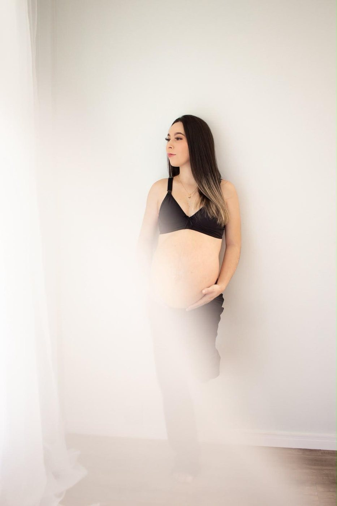
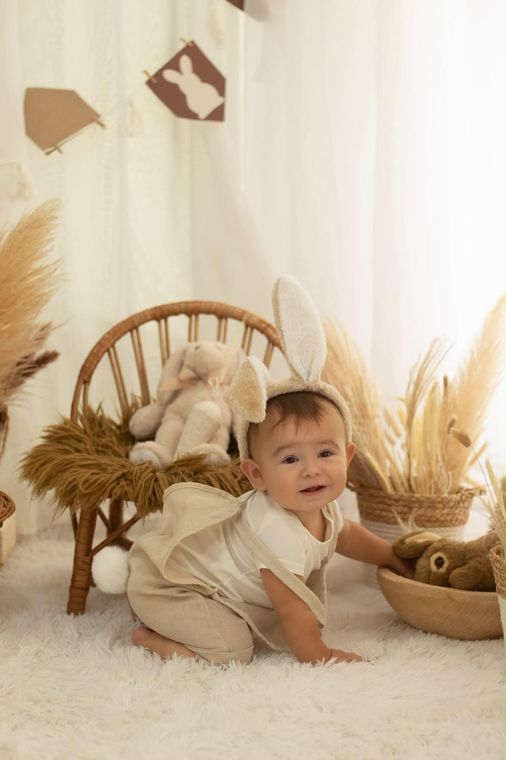
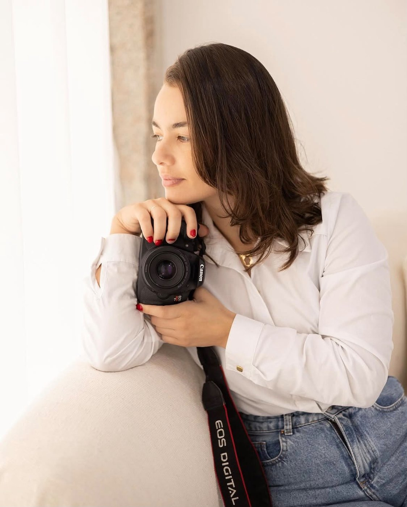

26 a 32 semanas
Gestante
O período mais confortável para a mamãe. Em estúdio, externo ou nos dois ambientes, com cores leves e neutras.
Fotografia afetiva · São Francisco do Sul
Gestante, primeiro aninho, aniversário, 15 anos, feminino e família. Luz natural, estilo clean e a espontaneidade de cada clique — porque meu objetivo não é entregar fotos, é entregar memória.
Atendimento em São Francisco do Sul e região · ensaios externos ou em locação



Sobre mim
Meu nome é Andrielli Passos, nasci em São Francisco do Sul, tenho 32 anos, sou mãe, esposa e fotógrafa.
Minha paixão é documentar o amor e romantizar os momentos, contando histórias através das minhas lentes. Tenho prazer em realizar ensaios de família, gestante, retratos femininos, corporativos e fotografia lifestyle, buscando a naturalidade e a espontaneidade em cada clique.
Não tenho a intenção de entregar apenas fotos: meu objetivo é entregar memórias, sentimentos e manter histórias.
Ensaios
Cada ensaio nasce de um momento específico. Escolha o seu ponto na linha do tempo.
26 a 32 semanas
O período mais confortável para a mamãe. Em estúdio, externo ou nos dois ambientes, com cores leves e neutras.
1 aninho
Cenário delicado e o primeiro contato com o bolo — imprevisível, e é justamente essa a graça.
cada festa
Cobertura da festa, de 1 a 2 horas. Detalhes da decoração, convidados e a reação da criança.
15 anos
Do clássico ao divertido, com troca de looks. O ensaio que ela vai mostrar para sempre.
toda idade
Um ato de celebração e amor-próprio, com direção de poses. Para se olhar com orgulho.
sempre
Fotos são heranças da família. O registro que preserva a memória e a identidade de todos.
Portfólio
Nenhuma foto nesta categoria ainda.
Tem muito mais no Instagram — @andriellipassosfotografia
Como funciona
Você me conta o motivo do ensaio e eu envio a agenda e as opções de pacote. A data fica reservada na confirmação.
Escolhemos juntas o cenário — estúdio, externo ou os dois — e as roupas. Sugiro cores leves e neutras.
Faço a direção de poses do começo ao fim. Com criança, quem manda no ritmo é ela — e está tudo bem.
Você recebe as fotos digitais com tratamento profissional, e as reveladas em 10x15 nos pacotes que incluem.
Nos ensaios externos, em caso de chuva a sessão é remarcada sem custo.
Investimento
Todos os valores são à vista. Toda foto entregue passa por tratamento de imagem.
Ideal entre 26 e 32 semanas · estúdio, externo ou os dois
R$ 550
R$ 680
R$ 1.050
Smash the cake · o bolo não está incluído
R$ 499,90
R$ 595
R$ 720
Cobertura da festa · entrega de todas as fotos
R$ 510
R$ 690
Com direção de poses do começo ao fim
R$ 510
R$ 600
Ensaio externo, no lugar que vocês escolherem
R$ 490
R$ 585
R$ 870
Debutante, com troca de looks
Sob consulta
Pagamento em dinheiro, Pix ou crédito — no crédito parcelado o valor é acrescido.
Depoimentos
“Ela me deixou à vontade do começo ao fim. Quando vi as fotos, chorei.”
“Cuidado com cada detalhe e um olhar que captura o que a gente sente de verdade.”
“Atendimento impecável e fotos que já viraram quadro na parede de casa.”
Contato
Me conte qual fase você quer registrar e a data que tem em mente. Será um prazer eternizar esse momento com você.
São Francisco do Sul e região — SC · ensaios externos ou em locação, com hora marcada